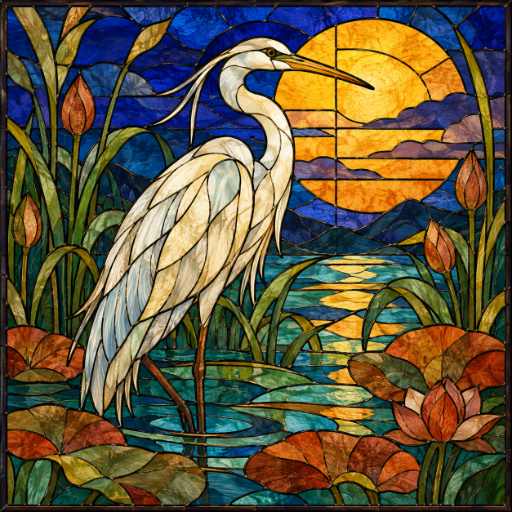

<- all projects

Mosaic Census
PC
Volume
Live
Divide the board. Restore the light.
An abandoned conservatory has lost its light. Join apprentice glazier Ema and recover the artist's habitat letters, one carefully placed boundary at a time. Each window is a region-division logic puzzle: every region needs exactly one lettered anchor and its stated number of cells, connected through cell edges, since corners do not count. Learn counts, connectivity, straight lines, filled rectangles, L shapes and clues that ask two regions to touch or stay apart. The glass picture is your reward, never a hidden clue, and there is no timer. Play 120 windows across five rooms, plus a daily window and 90 gallery studies.